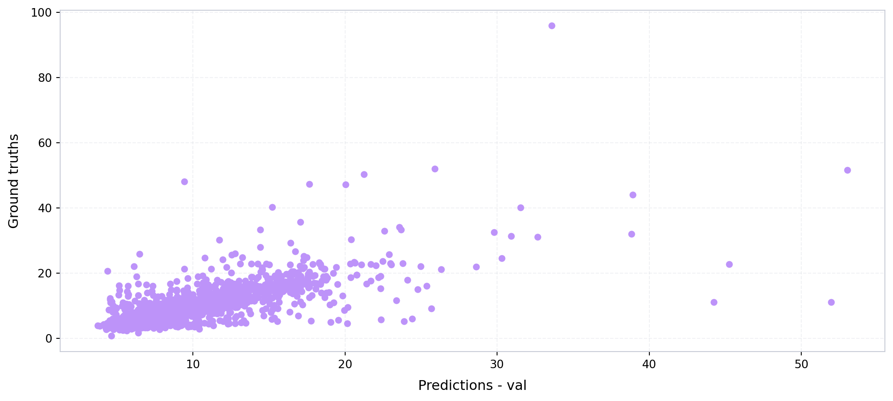
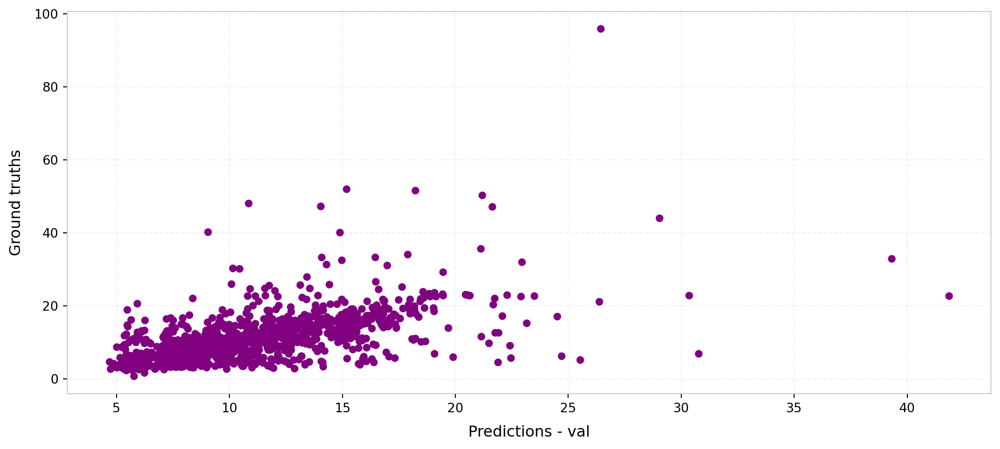
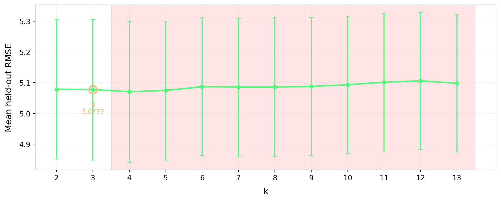
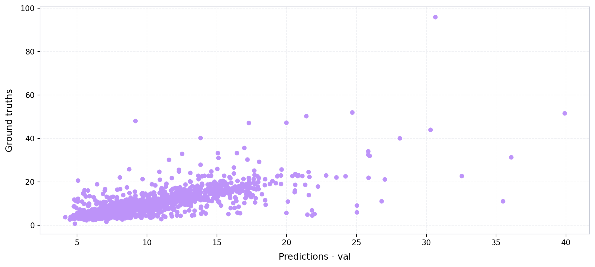

import numpy as np
from sklearn.metrics import r2_score
from pathlib import Path
import geopandas as gpd
import numpy as np
import pandas as pd
from xgboost import XGBRegressor
import joblib
import matplotlib.pyplot as plt
from imageable.visualization.data_visualization import plot_time_series
from tqdm import tqdm
from imageable._correction_ensembles.cluster_weighted_ensemble import ClusterWeightedEnsembleWrapper
from imageable._correction_ensembles.model_factories import choose_model_for_cluster_xgb
def compute_mse(ground_truths, predicted_values):
mse = 0
n_data = len(ground_truths)
for i in range(n_data):
y_truth = ground_truths[i]
y_predicted = predicted_values[i]
mse += ((y_truth - y_predicted)**2)/n_data
return mse
def compute_rmse(ground_truths, predicted_values):
mse = compute_mse(ground_truths, predicted_values)
return np.sqrt(mse)
def compute_mae(ground_truths, predicted_values):
mae = 0
n_data = len(ground_truths)
for i in range(n_data):
y_truth = ground_truths[i]
y_predicted = predicted_values[i]
mae += np.abs(y_truth - y_predicted)/n_data
return mae
def obtain_model_metrics(preds, ground_truths):
mse = compute_mse(preds, ground_truths)
rmse = compute_rmse(preds, ground_truths)
mae = compute_mae(preds, ground_truths)
r2_val = r2_score(ground_truths, preds)
return {
"mse":mse,
"rmse":rmse,
"mae":mae,
"r2_val":r2_val
}Model training — Boston
Define metrics calculation functions
Opening the ground truth data
PARENT_PATH = Path("/Users/legariapena.j/Library/CloudStorage/GoogleDrive-legariapena.j@husky.neu.edu/Shared drives/Cool and Carbon Free Africa/Building Image Datasets/data")
#Ground truth data Boston
GROUND_TRUTH_BOSTON_PATH = PARENT_PATH/"boston"/"footprints"/"labelled_buildings_meters.geojson"
ground_truth_boston = gpd.read_file(GROUND_TRUTH_BOSTON_PATH)
#All buildings Boston
all_buildings_path_boston = PARENT_PATH/"boston"/"footprints"/"boston_buildings.geojson"
all_buildings_boston = gpd.read_file(all_buildings_path_boston)
ground_truth_boston.head(5)| OBJECTID | PART_USE | PART_BRA_U | GRND_ELEV_2010 | ROOF_ELEV_2010 | BLDG_HGT_2010 | IEL_TYPE | Land_Use | BRA_Land_Use | Added | Shape_Length | Shape_Area | shape_wkt | height_meters | geometry | |
|---|---|---|---|---|---|---|---|---|---|---|---|---|---|---|---|
| 0 | 1 | R1 | R1 | 54.819302 | 71.710 | 16.890698 | BLDG | R1 | R1 | NaN | 0.000480 | 1.178902e-08 | NaN | 5.148285 | POLYGON ((-71.1655 42.34636, -71.16558 42.3463... |
| 1 | 2 | R2 | R2 | 130.143997 | 166.900 | 36.756003 | BLDG | R2 | R2 | NaN | 0.000317 | 5.572723e-09 | NaN | 11.203230 | POLYGON ((-71.1536 42.34629, -71.15363 42.3463... |
| 2 | 3 | R2 | R2 | 163.222000 | 184.935 | 21.713000 | BLDG | R2 | R2 | NaN | 0.000592 | 1.477983e-08 | NaN | 6.618122 | POLYGON ((-71.1549 42.34607, -71.1549 42.34606... |
| 3 | 4 | R3 | R3 | 131.453995 | 154.215 | 22.761005 | BLDG | R3 | R3 | NaN | 0.000438 | 9.968534e-09 | NaN | 6.937554 | POLYGON ((-71.15367 42.34617, -71.15367 42.346... |
| 4 | 5 | R1 | R1 | 169.606003 | 189.955 | 20.348997 | BLDG | R1 | R1 | NaN | 0.000478 | 1.184711e-08 | NaN | 6.202374 | POLYGON ((-71.15387 42.34527, -71.1539 42.3452... |
Opening the footprint batches
The batches were obtained by applying the Imageable library’s pipeline to the Boston buildings sample.
BATCHES_NAMES = ["1-1000", "1000-2000", "2000-3000", "3000-4000", "4000-5000", "5000-6000", "6000-7000", "7000-8000", "8000-9000", "9000-10000"]
boston_geojsons = {}
for i in range(10):
if(i == 0):
first_index = i*1000 + 1
else:
first_index = i*1000
second_index = (i+1)*1000
first_string = "Images "+f"{first_index} - {second_index}"
file_path = PARENT_PATH/"boston"/first_string/f"building_data_{first_index}_{second_index}.geojson"
boston_geojsons[f"{first_index}-{second_index}"] = gpd.read_file(file_path)Expanding the materials
The material column is currently a dictionary and has to be expanded so that each material receives its own column.
import ast
import json
def expand_materials(gdf):
#This would be a list of dictionaries.
materials = list(gdf["material_percentages"])
materials = [ast.literal_eval(x) for x in materials]
ALL_MATERIALS = ["asphalt","concrete","metal","road_marking","fabric_leather","glass","plaster", "plastic","rubber","sand", "gravel","ceramic","cobblestone","brick","grass","wood","leaf","water","human_body","sky"]
BASE_STR = "material_pct_"
#These would be all the materials
keys = ALL_MATERIALS
for i in range(len(keys)):
material_name = keys[i]
column_name = BASE_STR+material_name
column_values = []
for m in materials:
#Case where the dictionary is empty
if(not m):
column_values.append(None)
#Case where there is a percentages option in m (need to check why this happens)
elif(material_name not in m and "percentages" in m and material_name in m["percentages"]):
column_values.append(m["percentages"][material_name])
#Case where the dictionary just has materials: percentage.
elif(material_name in m):
column_values.append(m[material_name])
else:
print(m)
print(material_name)
gdf[column_name] = column_values
return gdf
#Expand the materials.
keys_boston_geojsons = list(boston_geojsons.keys())
for i in range(0,len(keys_boston_geojsons)):
key = keys_boston_geojsons[i]
boston_geojsons[key] = expand_materials(boston_geojsons[key])
boston_geojsons["1-1000"].head(5)| unprojected_area | projected_area | longitude_difference | latitude_difference | n_vertices | shape_length | complexity | inverse_average_segment_length | vertices_per_area | average_complexity_per_segment | ... | material_pct_gravel | material_pct_ceramic | material_pct_cobblestone | material_pct_brick | material_pct_grass | material_pct_wood | material_pct_leaf | material_pct_water | material_pct_human_body | material_pct_sky | |
|---|---|---|---|---|---|---|---|---|---|---|---|---|---|---|---|---|---|---|---|---|---|
| 0 | 1.178902e-08 | 197.662683 | 0.000144 | 0.000111 | 12 | 0.000480 | 40692.187881 | 25014.537585 | 1.017896e+09 | 3391.015657 | ... | 0.0 | 0.004521 | 0.001643 | 0.006880 | 0.002668 | 0.000000 | 0.002988 | 0.0 | 0.000000 | 0.215933 |
| 1 | 5.572723e-09 | 93.436003 | 0.000122 | 0.000081 | 10 | 0.000317 | 56935.660910 | 31517.241332 | 1.794455e+09 | 5693.566091 | ... | 0.0 | 0.018262 | 0.039590 | 0.000000 | 0.000615 | 0.000005 | 0.160042 | 0.0 | 0.000000 | 0.295044 |
| 2 | 1.477983e-08 | 247.807377 | 0.000208 | 0.000129 | 24 | 0.000592 | 40059.918891 | 40535.155665 | 1.623835e+09 | 1669.163287 | ... | 0.0 | 0.024004 | 0.002964 | 0.006807 | 0.004131 | 0.154949 | 0.413733 | 0.0 | 0.000000 | 0.081775 |
| 3 | 9.968534e-09 | 167.138733 | 0.000147 | 0.000122 | 22 | 0.000438 | 43891.175946 | 50282.186041 | 2.206944e+09 | 1995.053452 | ... | 0.0 | 0.038660 | 0.009683 | 0.000000 | 0.008127 | 0.000000 | 0.071326 | 0.0 | 0.000024 | 0.157742 |
| 4 | 1.184711e-08 | 198.633247 | 0.000147 | 0.000116 | 18 | 0.000478 | 40342.445217 | 37661.507996 | 1.519357e+09 | 2241.246956 | ... | 0.0 | 0.013672 | 0.156824 | 0.000000 | 0.077632 | 0.010627 | 0.318064 | 0.0 | 0.000046 | 0.128831 |
5 rows × 63 columns
Reducing the number of features
We reduce the number of features to the those that are used to train the models.
FOOTPRINT_FEATURES = [
"unprojected_area",
"projected_area",
"longitude_difference",
"latitude_difference",
"n_vertices",
"shape_length",
"complexity",
"inverse_average_segment_length",
"vertices_per_area",
"average_complexity_per_segment",
"isoperimetric_quotient",
"mean_distance_to_neighbors",
'nearest_neighbor_distance'
]
MATERIALS = [
"material_pct_concrete",
"material_pct_metal",
"material_pct_glass",
"material_pct_plastic",
"material_pct_asphalt",
"material_pct_brick",
"material_pct_human_body",
"material_pct_wood",
"material_pct_plaster",
"material_pct_leaf",
]
BUILDING_HEIGHT = "building_height"
all_features = []
all_features.extend(FOOTPRINT_FEATURES)
all_features.extend(MATERIALS)
all_features.append(BUILDING_HEIGHT)
#Combine all the Boston batches into a single data frame
gdf_boston = pd.concat(boston_geojsons.values(), ignore_index=True)
#Keep only the features that the models use.
ids_boston = list(gdf_boston["building_id"])
data_boston = gdf_boston[all_features].to_numpy()
ids_boston_nums = [int(x.split("_")[-1])-1 for x in ids_boston]
ground_truth_boston = ground_truth_boston[ground_truth_boston.index.isin(ids_boston_nums)]Extracting the ground truths
heights_boston = ground_truth_boston["height_meters"]Training the single XGBoost
#A function to split the data into training and validation sets.
def train_split(data, labels, train_percentage = 0.8, random_state = 42):
n_data = np.size(data, 0)
n_train = int(train_percentage*n_data)
n_validation = n_data - n_train
#Ok, now I need to pick elements
np.random.seed(random_state)
indices_train = np.random.choice(data.shape[0], size=n_train, replace=False)
initial_indices = list(range(n_data))
indices_val = [x for x in initial_indices if x not in indices_train]
training_data = data[indices_train]
validation_data = data[indices_val]
training_labels = labels[indices_train]
validation_labels = labels[indices_val]
results = {}
results["x_train"] = training_data
results["x_val"] = validation_data
results["y_train"] = training_labels
results["y_val"] = validation_labels
results["indices_train"] = indices_train
results["indices_val"] = indices_val
return resultsNow let’s train the model.
PARENT_PATH_EXPORT = Path("/Users/legariapena.j/Documents/imageable-2026/imageable/clustering-paper-notebooks/imageable-3-cities-experiments-notebooks/dummy_data")
all_data = data_boston.copy()
all_labels = heights_boston.to_numpy()
standard_scaler = joblib.load("/Users/legariapena.j/Documents/imageable-2026/imageable/data/models/cluster_ensemble_scaler_boston.pkl")
normalized_data = standard_scaler.transform(all_data)
RANDOM_STATE = 85
#Get the train/val split
with open("/Users/legariapena.j/Documents/imageable-2026/imageable/data/training_validation_data/data_boston.json") as f:
dictionaries_boston = json.load(f)
indices_train = np.array([ids_boston.index(d["building_id"]) for d in dictionaries_boston if d["data_type"] == "train"])
indices_val = np.array([ids_boston.index(d["building_id"]) for d in dictionaries_boston if d["data_type"] == "validation"])
#Parameters for the XGBoost estimator
XGB_PARAMS = dict(
n_estimators=300,
max_depth=6,
learning_rate=0.05,
subsample=0.9,
colsample_bytree=0.9,
reg_lambda=1.0,
objective="reg:squarederror",
random_state=0,
n_jobs=-1,
)
#Define variables for the distinct data sets.
valid_train = normalized_data[indices_train]
valid_train_labels = all_labels[indices_train]
valid_val = normalized_data[indices_val]
valid_val_labels = all_labels[indices_val]
valid_train_indices = indices_train
valid_val_indices = indices_val
#Train the single XBBoost estimator.
xgb_single_model = XGBRegressor(**XGB_PARAMS, early_stopping_rounds=50)
xgb_single_model.fit(valid_train, valid_train_labels, eval_set=[(valid_val, valid_val_labels)], verbose=False)
preds_single_xgb = xgb_single_model.predict(valid_val)
#Export the model
SINGLE_MODEL_PATH = PARENT_PATH_EXPORT/"single_xgb_model_boston.pkl"
joblib.dump(xgb_single_model, SINGLE_MODEL_PATH)
#Get the model metrics.
single_model_metrics = obtain_model_metrics(
preds_single_xgb,
valid_val_labels
)
#Define some colors for style and plot the predicted vs. ground truth plot for all the validation instances.
DRACULA_COLORS = {
"comment": "#6272a4",
"purple": "#bd93f9",
"red": "#ff5555",
"green": "#50fa7b",
"yellow": "#f1fa8c",
"pink": "#ff79c6",
"cyan": "#8be9fd",
"blue": "#44475a",
"orange": "#ffb86c"
}
plot_time_series(
preds_single_xgb,
valid_val_labels,
x_label = "Predictions - val",
y_label = "Ground truths",
color = DRACULA_COLORS["purple"],
linewidth = 0,
xticks_every = 0
)
print(single_model_metrics)
{'mse': np.float64(15.579613445501018), 'rmse': np.float64(3.9471019046258506), 'mae': np.float64(2.0924900330304936), 'r2_val': 0.49823759555753144}Training the footprint-based model
Let’s run something similar to train a model that only uses footprint features.
#Get only the indices of footprint features
indices_footprints = [i for i in range(len(all_features)) if all_features[i] in FOOTPRINT_FEATURES]
#Reduce the dimensions using only the footprint features.
footprint_data = normalized_data[:, indices_footprints]
#Get the train/va. split.
valid_train = footprint_data[indices_train]
valid_train_labels = all_labels[indices_train]
valid_val = footprint_data[indices_val]
valid_val_labels = all_labels[indices_val]
valid_train_indices = indices_train
valid_val_indices = indices_val
# Train the footprint-based model using the same XGBoost configuration that we used for the single model.
xgb_footprint_model = XGBRegressor(**XGB_PARAMS, early_stopping_rounds=50)
xgb_footprint_model.fit(valid_train, valid_train_labels, eval_set=[(valid_val, valid_val_labels)], verbose=False)
preds_footprint_xgb = xgb_footprint_model.predict(valid_val)
#Export the footprint-based model.
FOOTPRINT_MODEL_PATH = PARENT_PATH_EXPORT/"footprint_xgb_model_boston.pkl"
joblib.dump(xgb_footprint_model, FOOTPRINT_MODEL_PATH)
#Get the model metrics and print them.
footprint_model_metrics = obtain_model_metrics(
preds_footprint_xgb,
valid_val_labels
)
print(footprint_model_metrics)
#Plot the predicted vs. ground truth plot for the validation instances.
plot_time_series(
preds_footprint_xgb,
valid_val_labels,
x_label = "Predictions - val",
y_label = "Ground truths",
color = "purple",
linewidth = 0,
xticks_every = 0
){'mse': np.float64(18.73167899231592), 'rmse': np.float64(4.328010974144581), 'mae': np.float64(2.379867362972245), 'r2_val': 0.3967210853268598}
(<Figure size 1056x480 with 1 Axes>,
<Axes: xlabel='Predictions - val', ylabel='Ground truths'>)Comparison of the models over multiple random seed values
clustering_indices = list(range(len(all_features) - 1))
SEEDS = range(20, 50)
result_dictionaries = []
for seed in SEEDS:
#Get the train/val split for the given seed.
#This split will feed the CTP and single XGBoost.
split_results = train_split(normalized_data, all_labels, train_percentage=0.8, random_state=seed)
#Get the train/val split for the footprint-based model.
split_results_footprint = train_split(footprint_data, all_labels, train_percentage=0.8, random_state=seed)
#Clean the data for the CTP and single XGBoost models
mask_train = np.isfinite(split_results["x_train"]).all(axis=1)
mask_val = np.isfinite(split_results["x_val"]).all(axis=1)
x_train_clean = split_results["x_train"][mask_train]
y_train_clean = split_results["y_train"][mask_train]
x_val_clean = split_results["x_val"][mask_val]
y_val_clean = split_results["y_val"][mask_val]
#Clean the data for the footprint-based model.
mask_train_footprint = np.isfinite(split_results_footprint["x_train"]).all(axis=1)
mask_val_footprint = np.isfinite(split_results_footprint["x_val"]).all(axis=1)
x_train_footprint_clean = split_results_footprint["x_train"][mask_train_footprint]
y_train_footprint_clean = split_results_footprint["y_train"][mask_train_footprint]
x_val_footprint_clean = split_results_footprint["x_val"][mask_val_footprint]
y_val_footprint_clean = split_results_footprint["y_val"][mask_val_footprint]
#Iterate over many number of clusters for the CTP. Keep the one with the best RMSE.
best_k = None
rmse = float("Inf")
k_curve = {}
size_curve = {}
inner = train_split(x_train_clean, y_train_clean, train_percentage=0.8, random_state=seed)
for k in tqdm(range(2, 14)):
m = ClusterWeightedEnsembleWrapper(
n_clusters=k,
model_factory=choose_model_for_cluster_xgb,
kmeans_kwargs={"n_init": 10, "random_state": RANDOM_STATE},
feature_indices_used_for_clustering=clustering_indices,
decay_constant=0.1,
outside_weight_tau=170)
m.fit(inner["x_train"], inner["y_train"])
predictions = m.predict(inner["x_val"])
metrics = obtain_model_metrics(predictions, inner["y_val"])
k_curve[k] = metrics["rmse"]
size_curve[k] = int(np.bincount(m._kmeans.labels_, minlength=k).min())
if(metrics["rmse"]<rmse):
rmse = metrics["rmse"]
best_k = k
results_dictionary = {}
model = ClusterWeightedEnsembleWrapper(
n_clusters=best_k,
model_factory=choose_model_for_cluster_xgb,
kmeans_kwargs={"n_init": 10, "random_state": RANDOM_STATE},
feature_indices_used_for_clustering=clustering_indices,
decay_constant=0.1,
outside_weight_tau=170)
#Evaluate the 3 models that we are comparing.
model.fit(x_train_clean, y_train_clean)
predictions = model.predict(x_val_clean)
metrics = obtain_model_metrics(predictions, y_val_clean)
results_dictionary["cluster_then_predict_rmse"] = metrics["rmse"]
xgb_model = XGBRegressor(**XGB_PARAMS)
xgb_model.fit(x_train_clean, y_train_clean)
rmse_xgb = compute_rmse(xgb_model.predict(x_val_clean), y_val_clean)
results_dictionary["universal_model_rmse"] = rmse_xgb
xgb_model_footprint = XGBRegressor(**XGB_PARAMS)
xgb_model_footprint.fit(x_train_footprint_clean, y_train_footprint_clean)
rmse_xgb_footprint = compute_rmse(xgb_model_footprint.predict(x_val_footprint_clean), y_val_footprint_clean)
results_dictionary["footprint_model_rmse"] = rmse_xgb_footprint
results_dictionary["best_k"] = best_k
results_dictionary["k_curve"] = k_curve
results_dictionary["min_cluster_size"] = size_curve
result_dictionaries.append(results_dictionary)
print(results_dictionary)
#In the end we export
path = PARENT_PATH_EXPORT/"results_universal_vs_cluster_boston.json"
#Export the data.
path.parent.mkdir(parents=True, exist_ok=True)
with open(path, "w") as f:
json.dump(result_dictionaries, f, indent=2)
print("Saved to", path){'cluster_then_predict_rmse': np.float64(3.8758821443388345), 'universal_model_rmse': np.float64(4.0152228602648705), 'footprint_model_rmse': np.float64(4.594087263752377), 'best_k': 2, 'k_curve': {2: np.float64(5.0570665487624265), 3: np.float64(5.156031335250279), 4: np.float64(5.155206941811047), 5: np.float64(5.115249468416832), 6: np.float64(5.140291314362867), 7: np.float64(5.126737971638811), 8: np.float64(5.120259274502996), 9: np.float64(5.123918205689087), 10: np.float64(5.13219087214964), 11: np.float64(5.11707108108188), 12: np.float64(5.1708513157545495), 13: np.float64(5.139227747465255)}, 'min_cluster_size': {2: 338, 3: 279, 4: 285, 5: 86, 6: 67, 7: 66, 8: 52, 9: 15, 10: 23, 11: 15, 12: 15, 13: 15}}{'cluster_then_predict_rmse': np.float64(3.8857575202413623), 'universal_model_rmse': np.float64(3.9813529718281546), 'footprint_model_rmse': np.float64(3.990759891240362), 'best_k': 10, 'k_curve': {2: np.float64(6.970851840516824), 3: np.float64(6.926112566625461), 4: np.float64(6.960116995242085), 5: np.float64(6.936750103273109), 6: np.float64(6.933201851067192), 7: np.float64(6.99476663300895), 8: np.float64(7.0091445655861735), 9: np.float64(6.975658489232042), 10: np.float64(6.92281847740661), 11: np.float64(6.954409816806326), 12: np.float64(6.966863946360028), 13: np.float64(6.972549517367107)}, 'min_cluster_size': {2: 347, 3: 265, 4: 290, 5: 60, 6: 47, 7: 46, 8: 46, 9: 45, 10: 23, 11: 23, 12: 22, 13: 15}}{'cluster_then_predict_rmse': np.float64(4.8998582770404315), 'universal_model_rmse': np.float64(4.83056624871594), 'footprint_model_rmse': np.float64(5.518647431894425), 'best_k': 2, 'k_curve': {2: np.float64(3.7442653016437966), 3: np.float64(3.8141910621296797), 4: np.float64(3.800321849499471), 5: np.float64(3.826456927083768), 6: np.float64(3.779864310139213), 7: np.float64(3.839566902322025), 8: np.float64(3.819251193417186), 9: np.float64(3.8375901293352186), 10: np.float64(3.8527370837933623), 11: np.float64(3.781367312868042), 12: np.float64(3.8407339386199295), 13: np.float64(3.8430272743301632)}, 'min_cluster_size': {2: 345, 3: 195, 4: 27, 5: 23, 6: 23, 7: 23, 8: 22, 9: 21, 10: 13, 11: 13, 12: 13, 13: 13}}{'cluster_then_predict_rmse': np.float64(3.392998231424261), 'universal_model_rmse': np.float64(3.480237582152427), 'footprint_model_rmse': np.float64(4.491610349578754), 'best_k': 2, 'k_curve': {2: np.float64(5.324010944833296), 3: np.float64(5.548993376489637), 4: np.float64(5.49797955739306), 5: np.float64(5.522678167807491), 6: np.float64(5.533694951417972), 7: np.float64(5.5159664315224655), 8: np.float64(5.490994340972391), 9: np.float64(5.508343722337821), 10: np.float64(5.525280083414876), 11: np.float64(5.469032215642697), 12: np.float64(5.524087276972558), 13: np.float64(5.552407161659466)}, 'min_cluster_size': {2: 361, 3: 154, 4: 152, 5: 57, 6: 56, 7: 53, 8: 16, 9: 16, 10: 16, 11: 16, 12: 16, 13: 16}}{'cluster_then_predict_rmse': np.float64(4.3514885930483835), 'universal_model_rmse': np.float64(4.455037935658414), 'footprint_model_rmse': np.float64(6.23253894104999), 'best_k': 2, 'k_curve': {2: np.float64(3.7894085153062127), 3: np.float64(3.83599788630442), 4: np.float64(3.866947686698047), 5: np.float64(3.8453306779663583), 6: np.float64(3.8920804061394407), 7: np.float64(3.843753012383275), 8: np.float64(3.874049046273713), 9: np.float64(3.8480186656729702), 10: np.float64(3.9657912567520004), 11: np.float64(4.008374235881819), 12: np.float64(4.0313057226201465), 13: np.float64(4.036515540644927)}, 'min_cluster_size': {2: 350, 3: 305, 4: 304, 5: 288, 6: 88, 7: 58, 8: 59, 9: 14, 10: 15, 11: 14, 12: 14, 13: 8}}{'cluster_then_predict_rmse': np.float64(4.631188800136077), 'universal_model_rmse': np.float64(4.616470136860025), 'footprint_model_rmse': np.float64(5.666756515555222), 'best_k': 3, 'k_curve': {2: np.float64(5.790257199535973), 3: np.float64(5.790008266240237), 4: np.float64(5.795059761387283), 5: np.float64(5.815824333059972), 6: np.float64(5.817385341957678), 7: np.float64(5.817496839570157), 8: np.float64(5.838504933156931), 9: np.float64(5.828565889385297), 10: np.float64(5.808235607693031), 11: np.float64(5.819617448804291), 12: np.float64(5.819191094667211), 13: np.float64(5.797207052429054)}, 'min_cluster_size': {2: 297, 3: 116, 4: 34, 5: 50, 6: 34, 7: 35, 8: 24, 9: 24, 10: 24, 11: 11, 12: 24, 13: 11}}{'cluster_then_predict_rmse': np.float64(5.630764549352024), 'universal_model_rmse': np.float64(5.7701309106924645), 'footprint_model_rmse': np.float64(6.023069291777745), 'best_k': 10, 'k_curve': {2: np.float64(4.836910040168902), 3: np.float64(4.8240518393695675), 4: np.float64(4.815841855578345), 5: np.float64(4.7966654273932585), 6: np.float64(4.844358386800925), 7: np.float64(4.830931900692861), 8: np.float64(4.804589245030811), 9: np.float64(4.790974292650739), 10: np.float64(4.789056226402678), 11: np.float64(4.816166002245128), 12: np.float64(4.824384574127572), 13: np.float64(4.820794420331744)}, 'min_cluster_size': {2: 314, 3: 164, 4: 68, 5: 49, 6: 48, 7: 11, 8: 11, 9: 5, 10: 5, 11: 5, 12: 7, 13: 5}}{'cluster_then_predict_rmse': np.float64(4.606188971864281), 'universal_model_rmse': np.float64(4.828734215224127), 'footprint_model_rmse': np.float64(6.026737865346813), 'best_k': 2, 'k_curve': {2: np.float64(5.221813180566538), 3: np.float64(5.284226331126129), 4: np.float64(5.252405087239118), 5: np.float64(5.268665818265109), 6: np.float64(5.242615956374487), 7: np.float64(5.256425514761232), 8: np.float64(5.251853014652903), 9: np.float64(5.24542429429333), 10: np.float64(5.279455261331528), 11: np.float64(5.222186036268917), 12: np.float64(5.239309480031237), 13: np.float64(5.246112350870244)}, 'min_cluster_size': {2: 348, 3: 160, 4: 67, 5: 63, 6: 60, 7: 54, 8: 13, 9: 12, 10: 14, 11: 6, 12: 12, 13: 11}}{'cluster_then_predict_rmse': np.float64(6.817878628492402), 'universal_model_rmse': np.float64(6.772665677298104), 'footprint_model_rmse': np.float64(7.133896156412917), 'best_k': 2, 'k_curve': {2: np.float64(3.996360894716209), 3: np.float64(4.038212074261127), 4: np.float64(4.04372600053406), 5: np.float64(4.046366165822552), 6: np.float64(4.0470109751578445), 7: np.float64(4.082628662677284), 8: np.float64(4.060346483340778), 9: np.float64(4.07272461635993), 10: np.float64(4.087249497938988), 11: np.float64(4.08677487254454), 12: np.float64(4.070703403603958), 13: np.float64(4.0748876062912425)}, 'min_cluster_size': {2: 332, 3: 259, 4: 47, 5: 49, 6: 27, 7: 27, 8: 21, 9: 19, 10: 21, 11: 20, 12: 5, 13: 5}}{'cluster_then_predict_rmse': np.float64(3.718320759731017), 'universal_model_rmse': np.float64(3.824306734762149), 'footprint_model_rmse': np.float64(4.518042540007072), 'best_k': 3, 'k_curve': {2: np.float64(5.902964567633153), 3: np.float64(5.891837539272183), 4: np.float64(5.965622738927931), 5: np.float64(5.998964045430338), 6: np.float64(6.0299397437426565), 7: np.float64(5.936071972083601), 8: np.float64(5.92565856744578), 9: np.float64(5.941516431537278), 10: np.float64(5.959396619868387), 11: np.float64(5.966210276272548), 12: np.float64(5.96137457021865), 13: np.float64(5.974782243643616)}, 'min_cluster_size': {2: 334, 3: 222, 4: 23, 5: 43, 6: 23, 7: 23, 8: 13, 9: 13, 10: 13, 11: 11, 12: 13, 13: 13}}{'cluster_then_predict_rmse': np.float64(4.105707391742626), 'universal_model_rmse': np.float64(4.1970420313346635), 'footprint_model_rmse': np.float64(4.792004490941175), 'best_k': 7, 'k_curve': {2: np.float64(5.852454785925494), 3: np.float64(5.970891068341226), 4: np.float64(5.854759674151792), 5: np.float64(5.867220963913245), 6: np.float64(5.882586466591152), 7: np.float64(5.8191380461483035), 8: np.float64(5.866394158425852), 9: np.float64(5.881224677030372), 10: np.float64(5.878721329751329), 11: np.float64(5.869520987524101), 12: np.float64(5.848884176792763), 13: np.float64(5.838929916526852)}, 'min_cluster_size': {2: 319, 3: 129, 4: 50, 5: 50, 6: 48, 7: 29, 8: 26, 9: 26, 10: 17, 11: 26, 12: 25, 13: 26}}{'cluster_then_predict_rmse': np.float64(4.185026668180883), 'universal_model_rmse': np.float64(4.648235335600063), 'footprint_model_rmse': np.float64(6.395854903126852), 'best_k': 4, 'k_curve': {2: np.float64(6.175499492002062), 3: np.float64(6.187101226392861), 4: np.float64(6.174071476398013), 5: np.float64(6.27694798111062), 6: np.float64(6.235084018181752), 7: np.float64(6.232481189393801), 8: np.float64(6.336177784624661), 9: np.float64(6.237749681017475), 10: np.float64(6.223200848051874), 11: np.float64(6.308250268441478), 12: np.float64(6.2165977066533795), 13: np.float64(6.255275972358679)}, 'min_cluster_size': {2: 408, 3: 296, 4: 314, 5: 44, 6: 44, 7: 44, 8: 5, 9: 5, 10: 5, 11: 5, 12: 10, 13: 10}}{'cluster_then_predict_rmse': np.float64(3.4592453331719772), 'universal_model_rmse': np.float64(3.905305560620307), 'footprint_model_rmse': np.float64(4.161991627011313), 'best_k': 2, 'k_curve': {2: np.float64(3.448929899110369), 3: np.float64(3.5364934035707343), 4: np.float64(3.4666129082971713), 5: np.float64(3.499888631592793), 6: np.float64(3.5227900885404124), 7: np.float64(3.5023167005538745), 8: np.float64(3.4755838942977837), 9: np.float64(3.4872639699071573), 10: np.float64(3.4980878527390895), 11: np.float64(3.5016890012357624), 12: np.float64(3.4690765112747983), 13: np.float64(3.4889259500138654)}, 'min_cluster_size': {2: 341, 3: 196, 4: 224, 5: 43, 6: 53, 7: 35, 8: 23, 9: 20, 10: 7, 11: 7, 12: 12, 13: 10}}{'cluster_then_predict_rmse': np.float64(4.176204633018551), 'universal_model_rmse': np.float64(4.32227207383165), 'footprint_model_rmse': np.float64(4.675509099520059), 'best_k': 3, 'k_curve': {2: np.float64(5.145069062473709), 3: np.float64(4.239992104583608), 4: np.float64(4.269633415535382), 5: np.float64(4.338394372062861), 6: np.float64(4.266915518107421), 7: np.float64(4.314206296967838), 8: np.float64(4.345148791765011), 9: np.float64(4.3750900523231815), 10: np.float64(4.319974959145913), 11: np.float64(4.321376481002609), 12: np.float64(4.352010948942072), 13: np.float64(4.329734306235718)}, 'min_cluster_size': {2: 270, 3: 131, 4: 62, 5: 55, 6: 47, 7: 24, 8: 11, 9: 11, 10: 4, 11: 10, 12: 4, 13: 10}}{'cluster_then_predict_rmse': np.float64(4.422641923269403), 'universal_model_rmse': np.float64(4.4094476115402985), 'footprint_model_rmse': np.float64(5.758014998051679), 'best_k': 6, 'k_curve': {2: np.float64(5.259756264966593), 3: np.float64(5.224857020621516), 4: np.float64(5.232598998239492), 5: np.float64(5.147500930214818), 6: np.float64(5.132891069277848), 7: np.float64(5.183097265685048), 8: np.float64(5.162256618540143), 9: np.float64(5.183104729109163), 10: np.float64(5.239335896738003), 11: np.float64(5.253180780439003), 12: np.float64(5.270414139043698), 13: np.float64(5.267108198499261)}, 'min_cluster_size': {2: 357, 3: 303, 4: 300, 5: 69, 6: 69, 7: 18, 8: 18, 9: 18, 10: 18, 11: 18, 12: 18, 13: 10}}{'cluster_then_predict_rmse': np.float64(3.7846443693783107), 'universal_model_rmse': np.float64(3.7000187639514075), 'footprint_model_rmse': np.float64(5.209201234125233), 'best_k': 3, 'k_curve': {2: np.float64(6.656523403408788), 3: np.float64(6.622341108355672), 4: np.float64(6.787755956789389), 5: np.float64(6.6239557824954565), 6: np.float64(6.640664795470186), 7: np.float64(6.690364441291769), 8: np.float64(6.699638983854058), 9: np.float64(6.687428471393069), 10: np.float64(6.695333383787725), 11: np.float64(6.679966342165143), 12: np.float64(6.693468057614068), 13: np.float64(6.684519600272688)}, 'min_cluster_size': {2: 360, 3: 166, 4: 44, 5: 39, 6: 33, 7: 33, 8: 18, 9: 28, 10: 17, 11: 18, 12: 18, 13: 4}}{'cluster_then_predict_rmse': np.float64(3.7327462477255144), 'universal_model_rmse': np.float64(4.012817657769337), 'footprint_model_rmse': np.float64(5.030387088268648), 'best_k': 2, 'k_curve': {2: np.float64(3.2678440345195647), 3: np.float64(3.3187960909135508), 4: np.float64(3.3514387931880028), 5: np.float64(3.357504590115614), 6: np.float64(3.4203945453194637), 7: np.float64(3.4115390310103697), 8: np.float64(3.3651177877459446), 9: np.float64(3.383687015834605), 10: np.float64(3.431862553036485), 11: np.float64(3.5082043408072896), 12: np.float64(3.4901867812211966), 13: np.float64(3.5202077274843933)}, 'min_cluster_size': {2: 354, 3: 212, 4: 211, 5: 64, 6: 45, 7: 46, 8: 9, 9: 9, 10: 6, 11: 4, 12: 6, 13: 4}}{'cluster_then_predict_rmse': np.float64(3.6392752877042644), 'universal_model_rmse': np.float64(3.690054368434965), 'footprint_model_rmse': np.float64(4.966622074511389), 'best_k': 5, 'k_curve': {2: np.float64(6.802782997706416), 3: np.float64(6.877861855005572), 4: np.float64(6.880649325259952), 5: np.float64(6.79211979365187), 6: np.float64(6.799640136837175), 7: np.float64(6.796017390833979), 8: np.float64(6.828245113598486), 9: np.float64(6.820241210566373), 10: np.float64(6.849092013516782), 11: np.float64(6.834245290675526), 12: np.float64(6.834091764144521), 13: np.float64(6.8666285229343975)}, 'min_cluster_size': {2: 348, 3: 253, 4: 283, 5: 64, 6: 63, 7: 61, 8: 50, 9: 8, 10: 8, 11: 10, 12: 10, 13: 7}}{'cluster_then_predict_rmse': np.float64(3.8796701113743772), 'universal_model_rmse': np.float64(4.035699494371167), 'footprint_model_rmse': np.float64(4.107305637905849), 'best_k': 13, 'k_curve': {2: np.float64(4.015866202555983), 3: np.float64(3.976930829504097), 4: np.float64(3.948982688318517), 5: np.float64(3.9211634210748985), 6: np.float64(4.302102110434597), 7: np.float64(4.315434054259373), 8: np.float64(4.265456189544582), 9: np.float64(4.266601589651527), 10: np.float64(4.2259345845190595), 11: np.float64(4.225502256149811), 12: np.float64(4.190193233070111), 13: np.float64(3.9194070686962474)}, 'min_cluster_size': {2: 438, 3: 334, 4: 321, 5: 298, 6: 69, 7: 70, 8: 60, 9: 68, 10: 60, 11: 60, 12: 58, 13: 24}}{'cluster_then_predict_rmse': np.float64(3.3724790257058985), 'universal_model_rmse': np.float64(3.41254931921689), 'footprint_model_rmse': np.float64(4.460491107191398), 'best_k': 7, 'k_curve': {2: np.float64(6.935748337145878), 3: np.float64(6.854702041023751), 4: np.float64(6.8843935765521715), 5: np.float64(6.8621424857314), 6: np.float64(6.862451957434858), 7: np.float64(6.809184541620402), 8: np.float64(6.814482033046745), 9: np.float64(6.876907527473746), 10: np.float64(6.832594538069058), 11: np.float64(6.851265937925853), 12: np.float64(6.8820542318144495), 13: np.float64(6.84497814155133)}, 'min_cluster_size': {2: 350, 3: 104, 4: 48, 5: 48, 6: 48, 7: 41, 8: 22, 9: 16, 10: 20, 11: 24, 12: 22, 13: 11}}{'cluster_then_predict_rmse': np.float64(4.5695829466256495), 'universal_model_rmse': np.float64(4.607296770253083), 'footprint_model_rmse': np.float64(5.687765554632357), 'best_k': 4, 'k_curve': {2: np.float64(4.8567376820159875), 3: np.float64(4.916780825106934), 4: np.float64(4.855965211274669), 5: np.float64(4.911355384705486), 6: np.float64(4.917922299418458), 7: np.float64(4.9095062049643), 8: np.float64(4.92935016820998), 9: np.float64(4.918389035139826), 10: np.float64(4.926547545997094), 11: np.float64(4.9545761360155804), 12: np.float64(4.957984323935699), 13: np.float64(4.976421400885375)}, 'min_cluster_size': {2: 338, 3: 272, 4: 273, 5: 68, 6: 68, 7: 51, 8: 49, 9: 54, 10: 14, 11: 14, 12: 4, 13: 9}}{'cluster_then_predict_rmse': np.float64(7.050178215378481), 'universal_model_rmse': np.float64(7.05316200317419), 'footprint_model_rmse': np.float64(7.364069245619855), 'best_k': 4, 'k_curve': {2: np.float64(5.426538407120284), 3: np.float64(5.503679487692175), 4: np.float64(5.4260184066771275), 5: np.float64(5.515172393326424), 6: np.float64(5.454166264561384), 7: np.float64(5.453927066478077), 8: np.float64(5.46031371438044), 9: np.float64(5.47142031605523), 10: np.float64(5.459041873984849), 11: np.float64(5.474618315842147), 12: np.float64(5.4765482818765605), 13: np.float64(5.4646502116295395)}, 'min_cluster_size': {2: 309, 3: 149, 4: 219, 5: 47, 6: 26, 7: 9, 8: 9, 9: 9, 10: 13, 11: 5, 12: 9, 13: 5}}{'cluster_then_predict_rmse': np.float64(6.100856963325834), 'universal_model_rmse': np.float64(6.105757291023547), 'footprint_model_rmse': np.float64(6.471449321487027), 'best_k': 8, 'k_curve': {2: np.float64(3.6403725375961034), 3: np.float64(3.622271857273604), 4: np.float64(3.664881808901467), 5: np.float64(3.6837478713490026), 6: np.float64(3.6294406650517432), 7: np.float64(3.663889407104591), 8: np.float64(3.6139356068178685), 9: np.float64(3.662908691024272), 10: np.float64(3.671647442887664), 11: np.float64(3.6556164379013425), 12: np.float64(3.648159960715496), 13: np.float64(3.651937015284943)}, 'min_cluster_size': {2: 332, 3: 129, 4: 52, 5: 63, 6: 51, 7: 51, 8: 23, 9: 24, 10: 16, 11: 16, 12: 16, 13: 14}}{'cluster_then_predict_rmse': np.float64(3.789707859140612), 'universal_model_rmse': np.float64(4.035140564369119), 'footprint_model_rmse': np.float64(4.200744083504175), 'best_k': 4, 'k_curve': {2: np.float64(3.8806416984172496), 3: np.float64(3.843462644737654), 4: np.float64(3.828290671215267), 5: np.float64(3.8902751567768368), 6: np.float64(3.920585864203004), 7: np.float64(3.8949324268891865), 8: np.float64(3.9280646401764296), 9: np.float64(3.8873011248081637), 10: np.float64(3.9021930970270584), 11: np.float64(3.9300407727460405), 12: np.float64(3.9521234478204152), 13: np.float64(3.9515292548644383)}, 'min_cluster_size': {2: 308, 3: 208, 4: 215, 5: 60, 6: 59, 7: 27, 8: 6, 9: 6, 10: 4, 11: 8, 12: 6, 13: 4}}{'cluster_then_predict_rmse': np.float64(5.03364273404454), 'universal_model_rmse': np.float64(5.121447969065326), 'footprint_model_rmse': np.float64(5.652615608339961), 'best_k': 13, 'k_curve': {2: np.float64(5.906378276548271), 3: np.float64(5.917135307626907), 4: np.float64(5.945323771707172), 5: np.float64(5.9464803876042795), 6: np.float64(5.9171728840493785), 7: np.float64(5.94976362420664), 8: np.float64(5.926895197543892), 9: np.float64(5.959353242555371), 10: np.float64(5.939580304587334), 11: np.float64(5.904477384464737), 12: np.float64(5.919251126468566), 13: np.float64(5.8947581184806355)}, 'min_cluster_size': {2: 356, 3: 272, 4: 65, 5: 58, 6: 57, 7: 57, 8: 27, 9: 17, 10: 3, 11: 17, 12: 6, 13: 3}}{'cluster_then_predict_rmse': np.float64(4.9400608329501265), 'universal_model_rmse': np.float64(5.070607025705886), 'footprint_model_rmse': np.float64(5.462499840409169), 'best_k': 10, 'k_curve': {2: np.float64(3.5580022907781186), 3: np.float64(3.527889217375193), 4: np.float64(3.563200336238457), 5: np.float64(3.5349000034906553), 6: np.float64(3.5410117801528846), 7: np.float64(3.5387609301607545), 8: np.float64(3.538818290148375), 9: np.float64(3.5449442222541796), 10: np.float64(3.5187544406533124), 11: np.float64(3.5599297391010336), 12: np.float64(3.5524770707637248), 13: np.float64(3.5338285722582934)}, 'min_cluster_size': {2: 342, 3: 167, 4: 48, 5: 47, 6: 47, 7: 46, 8: 46, 9: 22, 10: 22, 11: 20, 12: 20, 13: 6}}{'cluster_then_predict_rmse': np.float64(5.464697114469544), 'universal_model_rmse': np.float64(5.439225550092855), 'footprint_model_rmse': np.float64(5.886587350258676), 'best_k': 7, 'k_curve': {2: np.float64(3.6874543638293535), 3: np.float64(3.7965878721340145), 4: np.float64(3.680408658829507), 5: np.float64(3.708008142388036), 6: np.float64(3.6551861717131042), 7: np.float64(3.6024667521256446), 8: np.float64(3.6536000099268033), 9: np.float64(3.639772835826851), 10: np.float64(3.6611730080954685), 11: np.float64(3.619221452443635), 12: np.float64(3.646386550796395), 13: np.float64(3.637481880684962)}, 'min_cluster_size': {2: 303, 3: 217, 4: 53, 5: 50, 6: 50, 7: 45, 8: 47, 9: 25, 10: 16, 11: 25, 12: 15, 13: 15}}{'cluster_then_predict_rmse': np.float64(3.725167367789153), 'universal_model_rmse': np.float64(3.965043730434863), 'footprint_model_rmse': np.float64(5.275170804489064), 'best_k': 2, 'k_curve': {2: np.float64(5.739496090660457), 3: np.float64(5.837715213145954), 4: np.float64(5.787944605634528), 5: np.float64(5.821778799663659), 6: np.float64(5.8824067745210975), 7: np.float64(5.849950522614414), 8: np.float64(5.7664863880350845), 9: np.float64(5.745796938864984), 10: np.float64(5.786797636769979), 11: np.float64(5.816059081961541), 12: np.float64(5.796845361974811), 13: np.float64(5.789798214168092)}, 'min_cluster_size': {2: 396, 3: 178, 4: 255, 5: 95, 6: 57, 7: 62, 8: 43, 9: 43, 10: 15, 11: 6, 12: 15, 13: 15}}{'cluster_then_predict_rmse': np.float64(4.032679244063152), 'universal_model_rmse': np.float64(4.033652932086016), 'footprint_model_rmse': np.float64(4.3468206435820544), 'best_k': 9, 'k_curve': {2: np.float64(7.67510494303961), 3: np.float64(7.7543253401506345), 4: np.float64(7.658942149061246), 5: np.float64(7.61239093072253), 6: np.float64(7.618805063680465), 7: np.float64(7.61348819672897), 8: np.float64(7.640051948507675), 9: np.float64(7.610276635355249), 10: np.float64(7.627602480400627), 11: np.float64(7.626327060060607), 12: np.float64(7.620232638086548), 13: np.float64(7.624859320858703)}, 'min_cluster_size': {2: 364, 3: 290, 4: 40, 5: 40, 6: 35, 7: 35, 8: 23, 9: 28, 10: 34, 11: 8, 12: 15, 13: 8}}{'cluster_then_predict_rmse': np.float64(4.3949446609380205), 'universal_model_rmse': np.float64(4.585511414377508), 'footprint_model_rmse': np.float64(5.487444663004028), 'best_k': 3, 'k_curve': {2: np.float64(3.800422369331437), 3: np.float64(3.691448665428441), 4: np.float64(3.7051113323948464), 5: np.float64(3.7659487638513567), 6: np.float64(3.7530674731678917), 7: np.float64(3.78294428093578), 8: np.float64(3.7668179589594084), 9: np.float64(3.824556623056096), 10: np.float64(3.797366060713652), 11: np.float64(3.912122571768871), 12: np.float64(3.9251195286978477), 13: np.float64(3.9511374828356556)}, 'min_cluster_size': {2: 346, 3: 281, 4: 278, 5: 57, 6: 57, 7: 51, 8: 10, 9: 10, 10: 5, 11: 10, 12: 6, 13: 5}}
Saved to /Users/legariapena.j/Documents/imageable-2026/imageable/clustering-paper-notebooks/imageable-3-cities-experiments-notebooks/dummy_data/results_universal_vs_cluster_boston.jsonChoosing K for the cluster-then-predict model (CTP)
MIN_CLUSTER_SIZE = 25
K_CHOSEN = 3
k_grid = sorted(result_dictionaries[0]["k_curve"].keys())
curves = np.array([[d["k_curve"][k] for k in k_grid] for d in result_dictionaries])
sizes = np.array([[d["min_cluster_size"][k] for k in k_grid] for d in result_dictionaries])
#Get the mean error of the k-RMSE curve averaging over all seeds.
mean_curve = curves.mean(axis = 0)
se_curve = curves.std(axis = 0, ddof = 1)/np.sqrt(len(curves))
worst_size = sizes.min(axis = 0)
too_small = [k_grid[i] for i in range(len(k_grid)) if worst_size[i] < MIN_CLUSTER_SIZE]
k_cut = too_small[0] if len(too_small) > 0 else None
assert k_cut is None or K_CHOSEN < k_cut
print(f"Seeds averaged: {len(curves)}")
print(f"Smallest group falls below {MIN_CLUSTER_SIZE} at k = {k_cut}")
print(f"k chosen: {K_CHOSEN}")
print()
for i, k in enumerate(k_grid):
mark = " <-- chosen" if k == K_CHOSEN else ""
print(f" k = {k:>2} mean held-out RMSE {mean_curve[i]:.4f} +/- {se_curve[i]:.4f}"
f" smallest group {worst_size[i]:>5}{mark}")
fig, ax = plot_time_series(
k_grid,
mean_curve,
x_label = "k",
y_label = "Mean held-out RMSE",
indexes_to_label = [k_grid.index(K_CHOSEN)],
color = DRACULA_COLORS["green"],
highlight_color = DRACULA_COLORS["orange"],
figsize = (10, 4),
show = False
)
ax.errorbar(k_grid, mean_curve, yerr = se_curve, fmt = "none", ecolor = DRACULA_COLORS["green"], capsize = 3)
if k_cut is not None:
ax.axvspan(k_cut - 0.5, k_grid[-1] + 0.5, color = DRACULA_COLORS["red"], alpha = 0.15)
plt.show()
#Saving the averaged curve too, so the choice can be checked without re-running the sweep
K_CURVE_PATH = PARENT_PATH_EXPORT/"k_mean_inner_curve_boston.json"
with open(K_CURVE_PATH, "w") as f:
json.dump({
"k": k_grid,
"mean_rmse": mean_curve.tolist(),
"se_rmse": se_curve.tolist(),
"smallest_group": worst_size.tolist(),
"per_seed_best_k": [d["best_k"] for d in result_dictionaries],
"min_cluster_size": MIN_CLUSTER_SIZE,
"k_cut": k_cut,
"k_chosen": K_CHOSEN,
}, f, indent = 2)
print("Saved to", K_CURVE_PATH)Seeds averaged: 30
Smallest group falls below 25 at k = 4
k chosen: 3
k = 2 mean held-out RMSE 5.0789 +/- 0.2268 smallest group 270
k = 3 mean held-out RMSE 5.0777 +/- 0.2290 smallest group 104 <-- chosen
k = 4 mean held-out RMSE 5.0707 +/- 0.2295 smallest group 23
k = 5 mean held-out RMSE 5.0750 +/- 0.2262 smallest group 23
k = 6 mean held-out RMSE 5.0872 +/- 0.2246 smallest group 23
k = 7 mean held-out RMSE 5.0859 +/- 0.2242 smallest group 9
k = 8 mean held-out RMSE 5.0859 +/- 0.2262 smallest group 5
k = 9 mean held-out RMSE 5.0879 +/- 0.2247 smallest group 5
k = 10 mean held-out RMSE 5.0936 +/- 0.2234 smallest group 3
k = 11 mean held-out RMSE 5.1016 +/- 0.2227 smallest group 4
k = 12 mean held-out RMSE 5.1064 +/- 0.2223 smallest group 4
k = 13 mean held-out RMSE 5.0983 +/- 0.2235 smallest group 3
Saved to /Users/legariapena.j/Documents/imageable-2026/imageable/clustering-paper-notebooks/imageable-3-cities-experiments-notebooks/dummy_data/k_mean_inner_curve_boston.jsonTraining the cluster-then-predict (CTP) model
#Let's train the CTP
K = 3
#We exclude the SVI height from the list of features used for clustering.
clustering_indices = list(range(len(all_features) - 1))
#Create the CTP object
cluster_then_predict = ClusterWeightedEnsembleWrapper(
n_clusters = K,
model_factory = choose_model_for_cluster_xgb,
kmeans_kwargs={"n_init": 10, "random_state": RANDOM_STATE},
feature_indices_used_for_clustering=clustering_indices,
early_stopping_rounds=50,
decay_constant=0.1,
outside_weight_tau=170
)
#Obtain the train/val split.
valid_train = normalized_data[indices_train]
valid_train_labels = all_labels[indices_train]
valid_val = normalized_data[indices_val]
valid_val_labels = all_labels[indices_val]
valid_train_indices = indices_train
valid_val_indices = indices_val
#Train the CTP.
cluster_then_predict = cluster_then_predict.fit(valid_train, valid_train_labels, valid_val, valid_val_labels)
preds_cluster_then_predict = cluster_then_predict.predict(valid_val)
#Get the CTP metrics and print them.
cluster_then_predict_metrics = obtain_model_metrics(
preds_cluster_then_predict,
valid_val_labels
)
print(cluster_then_predict_metrics)
plot_time_series(
preds_cluster_then_predict,
valid_val_labels,
x_label = "Predictions - val",
y_label = "Ground truths",
color = DRACULA_COLORS["purple"],
linewidth = 0,
xticks_every = 0
)
#Export the CTP model.
MODEL_FILE_NAME = "cluster_ensemble_model_boston.pkl"
cluster_then_predict.export_model(
save_dir = PARENT_PATH_EXPORT,
filename = "cluster_ensemble_model_boston"
)
SCALER_PATH = PARENT_PATH_EXPORT/"cluster_ensemble_scaler_boston.pkl"
joblib.dump(standard_scaler, SCALER_PATH){'mse': np.float64(15.018290262846243), 'rmse': np.float64(3.875343889624022), 'mae': np.float64(2.115267800671059), 'r2_val': 0.5163157635931757}
Exporting the training and validation data
#Training
n_training = len(valid_train)
all_dictionaries = []
for i in range(n_training):
feature_vector = valid_train[i,:]
index = valid_train_indices[i]
city = "Boston"
data_type = "train"
cluster = np.argmax(cluster_then_predict._compute_weights(feature_vector.reshape(1, -1)))
real_height = valid_train_labels[i]
dictionary = {
"feature_names": all_features,
"features":feature_vector.tolist(),
"index":index,
"building_id": ids_boston[index],
"city": city,
"data_type": data_type,
"cluster":cluster,
"real_height":real_height
}
all_dictionaries.append(dictionary)
for i in range(len(valid_val)):
feature_vector = valid_val[i,:]
index = valid_val_indices[i]
city = "Boston"
data_type = "validation"
cluster = np.argmax(cluster_then_predict._compute_weights(feature_vector.reshape(1, -1)))
real_height = valid_val_labels[i]
dictionary = {
"feature_names": all_features,
"features":feature_vector.tolist(),
"index":index,
"building_id": ids_boston[index],
"city": city,
"data_type": data_type,
"cluster":cluster,
"real_height":real_height
}
all_dictionaries.append(dictionary)
EXPORT_PATH_DICTS = PARENT_PATH_EXPORT/"data_boston.json"
class NumpyEncoder(json.JSONEncoder):
def default(self, obj):
if isinstance(obj, np.ndarray):
return obj.tolist()
if isinstance(obj, (np.integer,)):
return int(obj)
if isinstance(obj, (np.floating,)):
return float(obj)
return super().default(obj)
with open(EXPORT_PATH_DICTS, "w") as f:
json.dump(all_dictionaries, f, indent=2, cls=NumpyEncoder)